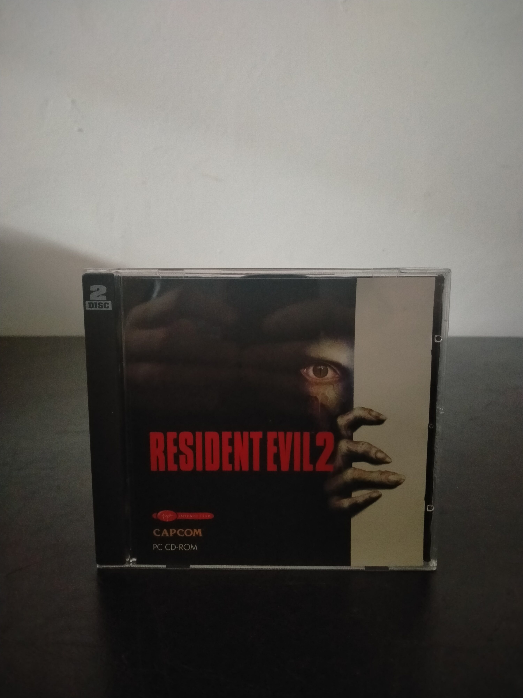

Ficha #000000
Resident Evil 2
Conversión para PC de Resident Evil 2, segunda entrega de la influyente saga de terror de Capcom, publicada originalmente en 1998. La historia presenta dos campañas interrelacionadas protagonizadas por Leon S. Kennedy y Claire Redfield durante el brote vírico que devasta Raccoon City. Su diseño combina exploración de escenarios prerenderizados, cámaras fijas, combate, resolución de puzles y una gestión limitada de munición y objetos, elementos fundamentales en la consolidación del survival horror. La edición para Windows se distribuyó en dos CD-ROM y adaptó al ordenador las secuencias cinematográficas, los escenarios y el sistema de campañas del lanzamiento original, incorporando opciones gráficas propias del hardware de PC de finales de los noventa. Esta presentación europea en caja jewel case, publicada bajo los sellos de Capcom y Virgin Interactive, documenta la comercialización independiente del juego para PC CD-ROM fuera del formato de caja grande.
- Formato
- Jewel Case
- Plataforma
- Win95 Win98
- Género
- Survival horror Acción Terror Aventura Aventura en tercera persona
- Serie
- Todos Jewel Case
- Desarrollador
- Capcom
- Distribuidor
- Capcom, Virgin Interactive Entertainment
- EAN
- —
Contenido de la edición
- Caja jewel case
- 2 CD-ROM
Preservación
- Protección
- No determinado
- Formato recomendado
- BIN/CUE
- Jugable en virtualización
- Sí
Se recomienda realizar una imagen completa de cada uno de los dos CD-ROM y conservar su orden e identificación. El formato BIN/CUE permite documentar adecuadamente la estructura de los discos; la ejecución virtual es viable en un entorno Windows 95 o Windows 98 correctamente configurado, aunque debe verificarse la posible comprobación de presencia del CD durante el juego.